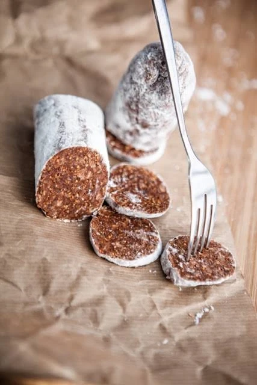

Smoked paprika
Ingredients: dried figs, Aleppo pepper, cinnamon, smoked paprika.
Fig salami began as a way for Aegean families to keep the surplus of a good harvest. Ripe figs were minced, packed into a cloth, tied with string and hung in the cellar until the log firmed up. Cut across, each slice showed a mosaic of walnut against dark fig.
We work the same way, only in a certified plant, and in place of the walnut we fold in six different spice and nut blends — ours in Athens, where the figs travel from Aydin to be pressed and cured: one ingredient list, no glucose syrup, no gelling agents, no preservatives. The firmness comes from pressing and curing, not from additives.

| Product name | Fig salami (incir salamı) |
|---|---|
| Fig origin | Aydin, Türkiye |
| Produced in | Athens, Greece |
| Ingredients | Dried figs, plus almonds, pistachios, orange, onion or spices depending on the variety |
| Variants | Smoked paprika, almond, pistachio, Moroccan spices, tikka masala, orange |
| Net weight | 180 g (all six varieties) |
| Log dimensions | Ø 45–55 mm, length 180–240 mm |
| Moisture | 18–22% |
| Additives | None. No added sugar, no preservatives. |
| Allergens | Tree nuts (almond and pistachio varieties only) |
| Shelf life | 12 months at 4–18 °C, 65% RH |
| HS code | 2008.99 |
Slice 5–7 mm thick and serve chilled with aged cheese, blue cheese or cured meats. Also sold sliced as a lunchbox snack and used as a bakery inclusion.
Every variety starts from the same fig paste; the spices and nuts we work into it make the difference. All six are produced as 180 g logs.
Ingredients: dried figs, Aleppo pepper, cinnamon, smoked paprika.
Ingredients: dried figs, almonds, black pepper.
Ingredients: dried figs, Aegina pistachios, Aleppo pepper, cinnamon, smoked paprika.
Ingredients: dried figs, onion, ras el hanout spice blend.
Ingredients: dried figs, onion, tikka masala spices.
Ingredients: dried figs, orange, black pepper.
All six are 100% vegan, with no added sugar, no preservatives and no gluten. Sleeves and boxes can be printed to your artwork, including multilingual labels and market-specific nutrition panels.
Ask for the current price listFig salami is our fastest-growing line in specialty retail. Ask for the seasonal forecast.